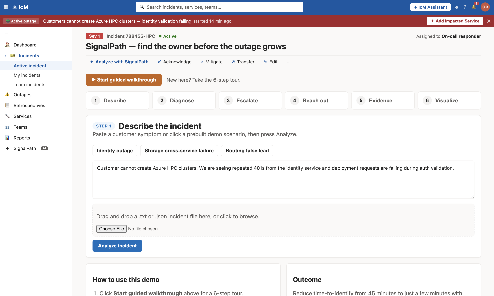
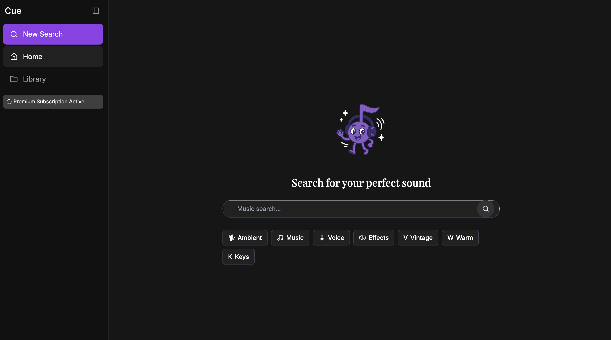
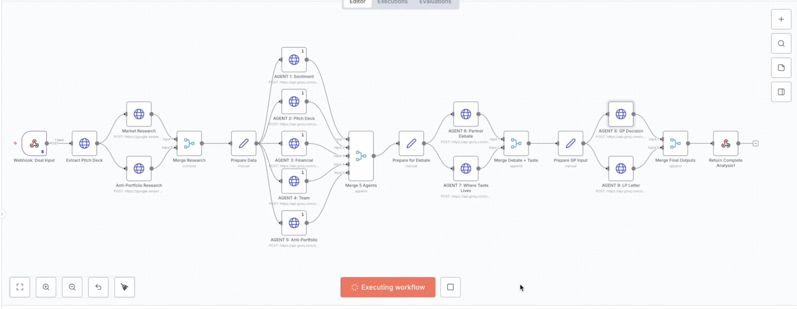
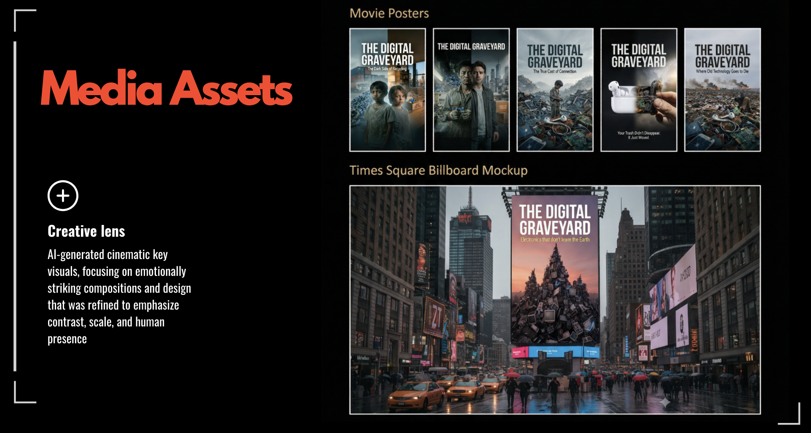

Current Track
NYU Stern BTE · 3.88 GPA
New York based · Product Builder at the intersection of AI, Venture, and Financial Systems
I am Nihar Bagkar. I turn ambiguous, high-stakes ideas into operating systems people can use: clearer decisions, stronger products, and faster execution.

Current Track
NYU Stern BTE · 3.88 GPA
Current Role
Microsoft PM Intern (Summer 2026)
Venture Diligence
75+ startups screened · 20+ memos
Systems Impact
170+ budget files automated · 100+ hours saved
Thesis
My work sits at the intersection of product judgment, venture context, and systems thinking. I like building the thing that makes other people faster: a workflow, a decision layer, or a clearer way to act on messy information.
Where I add value
Selected Work
These projects are selected to show product judgment, venture fluency, and execution under ambiguity across creative, financial, and operational systems.
Fractional marketplace for collectible trading cards that lets users track market prices, trade fractional ownership, and manage a portfolio through a centralized exchange.

A zero-input IcM extension that ends the scramble to find an incident's true owner. One click traces the service-dependency graph to the root-cause service and routes it to the right on-call engineer with a ready-to-act fix package.

Semantic sound search that translates language into production-ready audio, cutting friction in creative flow.
A recruiting command center that unifies applications, outreach, and prep into one system candidates can run daily.
Automates extraction of budgeting tables from messy PDFs into clean outputs for finance teams and analysts.
Trust-focused platform concept reducing fraud and ownership ambiguity in collectibles with verifiable records.

Agentic workflow that compresses GP-level venture work, from sourcing to portfolio review, into repeatable routines.

AI-generated documentary concept exposing the hidden downstream cost of e-waste and digital consumption habits.
Need the full legacy catalog? See archived project documentation.
Testimonials
"Nihar brings founder-level urgency with product-level structure. He does not just ideate, he operationalizes."
Startup collaborator"He translates ambiguous problems into clear systems quickly, then aligns people around execution."
Student org leadership peer"Strong strategic instinct, but equally strong follow-through. That combination is rare at this stage."
Mentor feedbackJourney
2026 - Present
Building product judgment in enterprise-scale environments while expanding execution depth across strategy, roadmap thinking, and user-centered product decisions.
2025 - Present
Screened 75+ startups and produced 20+ investment memos while redesigning opportunity pipeline data architecture to improve retrieval and monitoring by 30%.
Summer 2025
Built dashboards and models across a rolling 5-year budget horizon, automated extraction of 170+ budget files, and delivered KPI insights to C-suite and finance leadership.
Campus Leadership
Scaled student communities with measurable outcomes, including 114% attendance growth, budget ownership, and cross-campus programming with founders and investors.
Publications
Awards